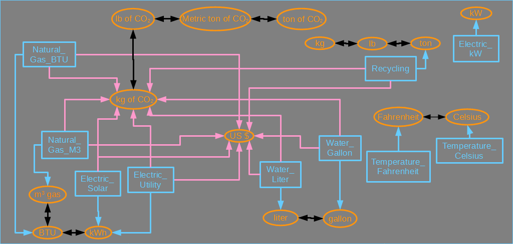
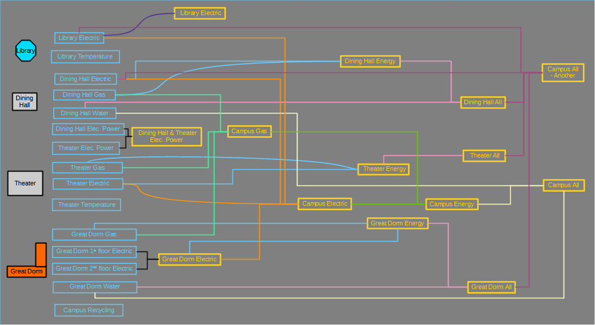
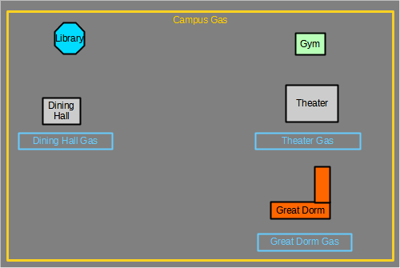
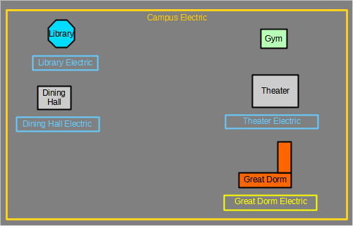

OED Documentation
Examples
Version V1.0.0
Documentation overview
User documentation
Information
Graphing
Meters/Groups
Other Features
Admin documentation
Documentation versions for this page
The following gives a description of the sample data that was used to create the documentation examples. It gives both a high-level description and the details. It assumes you understand the ideas and terminology of units, meters and groups.. For those interested, more details about conversions and units is available.
Units
The units (and conversions) are described graphically in this figure: 
For now, ignore the arrows that describe the conversions. The different items are labeled as follows:
- Blue boxes represent meter units
- Orange ovals represent a unit for graphing (graphing unit)
All units are of type quantity except these:
- kW and Electric_kW are flow units
- Fahrenheit, Celsius, Temperature_Fahrenheit and Temperature_Celsius are raw units
Why these units exist will be described on other documentation pages.
Conversions
The conversions linking the units in the example are shown as arrows in the figure above. The actual value of the conversion is not shown. The different items are labeled as follows:
- A line represents a conversion between two units. The arrow indicates which direction or directions are allowed. If the line has arrows in both directions then it is bidirectional meaning you can convert either way. The line between kg and lb is this way which means OED will convert from kg to lb and lb to kg. A line with only one arrow is unidirectional. The line between Recycling and ton is this way. As such, you can convert from Recycling to ton but not the other way around.
- A blue line links a meter (in blue) to the unit in which it collects (in orange). For example, the Electric_Utility meter unit is connected to the kWh unit which is a standard electric energy unit. The Electric_Solar meter unit is also connected to the kWh unit as it also collects in this unit. There are also times that the same type of energy source may have meters that collect in different units. This is shown by Natural_Gas_BTU and Natural_Gas_M3 which are both gas meters but they collect in BTU and cubic meters of gas, respectively. Note that these conversions only have an arrow from the meter unit to the graphing unit since OED will only convert data in that direction. As is common, all the conversion values along blue lines are the identity and do not change the value because the meter collects in the connected unit.
- A pink line is similar to a blue line but represents a conversion that allows one to graph the meter data in the linked unit.
- A black line links two units (not of type meter). As would be expected, these are all bidirectional since you can, in general, convert both way. In the example, you can convert from ton to lb and lb to ton.
OED can do what it calls chained conversions. This means that any unit that can be reached via an arrow in the allowed direction can be used for graphing a meter unit. For example, the Recycling meter unit can be graphed in kg because there is a chain of conversions from Recycling to ton, ton to lb and lb to kg. Given this, OED can calculate the overall conversion from Recycling to kg. Note the unidirectional arrows stop undesirable conversions such as converting kg of CO2 to meter units such as Electric_Utility. You cannot use CO2 to create electricity.
The follow table gives the details on each interesting conversion. A conversion is defined by the source, destination, slope and intercept. The row with source of Electric_Utility, destination of US $, slope of 0.115 and intercept of 0 means that each kWh of electricity costs 0.115 U.S. dollars or 11.5 cents. Most conversions have an intercept of 0 but temperature is the exception in this example. The table also indicates if the conversion is bidirectional. The conversion from a meter to its unit of collection (blue, unidirectional arrows) are all slope of 1, intercept of 0 and bidirectional of No so are not listed. The values are meant to be reasonable for each quantity; clearly different locations and times will have different values.
| Source | Destination | Slope | Intercept | Bidirectional? | Note |
|---|---|---|---|---|---|
| Electric_Utility | US $ | 0.115 | 0 | No | |
| Electric_Utility | kg of CO₂ | 0.709 | 0 | No | |
| Electric_Solar | US $ | 0.7 | 0 | No | |
| Electric_Solar | kg of CO₂ | 0 | 0 | No | Assumes solar has no incremental CO2 |
| Natural_Gas_BTU | US $ | 6.75 x 10-6 | 0 | No | |
| Natural_Gas_BTU | kg of CO₂ | 5.29 x 10-5 | 0 | No | |
| Natural_Gas_M3 | US $ | 0.25 | 0 | No | |
| Natural_Gas_M3 | kg of CO₂ | 1.94 | 0 | No | |
| Water_Gallon | kg of CO₂ | 0.0012 | 0 | No | |
| Water_Gallon | US $ | 0.011 | 0 | No | |
| Water_Liter | kg of CO₂ | 0.00031 | 0 | No | |
| Water_Liter | US $ | 0.00291 | 0 | No | |
| Recycling | kg of CO₂ | -2890 | 0 | No | This is CO2 saved from not going to trash and not the net created. |
| Recycling | US $ | 0 | 0 | No | Assumes recycling is free. |
| liter | gallon | 0.2641729 | 0 | Yes | |
| kg | lb | 2.2 | 0 | Yes | |
| ton | lb | 2000 | 0 | Yes | |
| kWh | BTU | 3412.142 | 0 | Yes | |
| BTU | m3 gas | 2.73 x 10-5 | 0 | Yes | |
| kg | metric ton | 0.001 | 0 | Yes | |
| Celsius | Fahrenheit | 1.8 | 32 | Yes |
The value for the example chained conversion above (Recycling to kg) is worked out as follows (all intercepts are 0):
- Recycling to ton has a conversion of slope = 1 which indicates that the quantity of recycling is provided in the unit of ton.
- ton to lb has a conversion of 2000 so the total conversion is 1 x 2000 = 2000.
- lb to kg has a conversion of 1 / 2.2 because the provided conversion is kg to lb so it must be inverted. This gives a final conversion of 2000 / 2.2 = 909.09. Thus, 1 ton of recycling is the same as 909.09 kg of recycling.
Note that units are incompatible if they are not connected by any direct or chained conversion. For example, if you have a meter collecting in Electric_Utility units then it can be graphed in these compatible units: kWh, BTU, m3 gas, kg of CO2, lb of CO2, metric ton of CO2, ton of CO2 and US $. All other units are incompatible so you cannot display that meter in liter, gallon, kW, Fahrenheit, Celsius, kg, lb nor ton.
Meters
The meters and groups in the example are showing in the following figure. For now we will ignore the groups. 
The meters are on the left-hand side of the image in the blue rectangles. The beginning of the meter name is the building it is associated with: Library, Dining Hall, Theater or Great Dorm. The exception is "Campus Recycling" which is a campus-wide meter and not associated with a building. It is also unique because this type of data would normally be manually entered into OED and not received from a automated meter. All meters collect for its entire building except the electric meters for "Great Dorm" which has separate meters for the first and second floor of the building.
The following table gives information about the meters. The headers for the columns indicate it contains this information:
- Name: Is the name of the meter shown in OED and in the figures.
- Unit: The first part is the meter unit that the meter collects data in and the second is the associated graphic unit. This association can be seen in the image above by the blue arrows from the blue meter unit to the orange graphic unit.
- Default graphing unit: This is the graphic unit that OED will use if a unit has yet to be selected.
- Area: This is the size of the building associated with the meter. If it is blank then there is no value. All meters in the example use square meters for the area. Some meters do not have an area. This could be because it was not provided for this sample site or it does not make sense such as for "Campus Recycling".
- Reading frequency: This is the time that each reading spans for this meter. For example, a value of 1 hour means each reading given to OED should be for 1 hour of use. This value impacts the accuracy of points returned in the line graphic.
- Note: Any needed descriptive information.
| Name | Unit | Default graphic unit | Area | Reading frequency | Note |
|---|---|---|---|---|---|
| Dining Hall Electric | Electric_Utility / kWh | kWh | 1,000 | 15 minutes | |
| Dining Hall Gas | Natural_Gas_BTU / BTU | BTU | 1,000 | 15 minutes | |
| Dining Hall Water | Water_Gallon / gallon | gallon | 1,000 | 1 hour | |
| Dining Hall Electric Power | Electric_kW / kW | kW | 1,000 | 5 minutes | Note that all Power meters are kW (not kWh). The meter reads at a highest frequency. |
| Theater Electric | Electric_Utility / kWh | kWh | 10,000 | 20 minutes | |
| Theater Gas | Natural_Gas_M3 / m3 gas | BTU | 10,000 | 20 minutes | Note that the default graphic unit differs from the meter unit. |
| Theater Electric Power | Electric_kW / kW | kW | 10,000 | 20 minutes | |
| Theater Temperature | Temperature_Celsius / kWh | Fahrenheit | 20 minutes | Note that the default graphic unit differs from the meter unit. | |
| Library Electric | Electric_Utility / kWh | kWh | 100,000 | 23 minutes | This is an unusual reading frequency but shows OED can handle it. |
| Library Temperature | Temperature_Fahrenheit / Fahrenheit | Fahrenheit | 20 minutes | ||
| Great Dorm 1st Floor Electric | Electric_Solar / kWh | kWh | 5,000 | 20 minutes | Only the first floor of a two story building and half the area. Note it gets electricity from solar. |
| Great Dorm 2nd Floor Electric | Electric_Solar / kWh | kWh | 5,000 | 20 minutes | Only the second floor of a two story building and half the area. Note it gets electricity from solar. |
| Great Dorm Gas | Natural_Gas_BTU / BTU | BTU | 10,000 | 20 minutes | |
| Great Dorm Water | Water_Liter / liter | gallon | 10,000 | 15 minutes | Note that the default graphic unit differs from the meter unit. Also, water is read at a different frequency than other meters in this building. |
| Campus Recycling | Recycling / ton | lb | 7 days | Note that the default graphic unit differs from the meter unit. Also, the reading frequency is very low because it is entered manually but OED can deal with that. |
groups
The figure above has the groups shown in the yellow rectangles. A line from a meter to a group indicates that the meter is a member of the group. A line from a group to a group indicates the group on the left is a member of the group on the right. Each group shows all of its members with the same color line. For example, "Dinning Hall All" contains the meter "Dining Hall Water" and the group "Dining Hall Energy" where they are connected by a pink line.
As an example shown another way, the "Campus Gas" group can be visualized similarly to the map shown in OED as in the following figure that shows it includes "Dining Hall Gas", "Theater Gas" and "Great Dorm Gas" meters. 
As another example, the "Campus Electric" group can be visualized as in the following figure that shows it includes "Library Electric", "Dining Hall Electric" and "Theater Electric" meters along with the "Great Dorm Electric" group. 
The following table gives information about the groups where the headers indicate similar information as the meter equivalent.
| Name | Default graphic unit | Area | Note |
|---|---|---|---|
| Dining Hall Energy | kWh | 1,000 | |
| Dining Hall All | ton of CO₂ | 1,000 | |
| Theater Energy | kWh | 10,000 | |
| Theater All | ton of CO₂ | 10,000 | |
| Dining & Theater Electric Power | kW | ||
| Library Energy | kWh | 10,0000 | |
| Great Dorm Electric | kWh | 10,000 | |
| Great Dorm Energy | kWh | 10,000 | |
| Great Dorm All | ton of CO₂ | 10,000 | |
| Campus Electric | kWh | 121,000 | |
| Campus Gas | BTU | 121,000 | |
| Campus Energy | kWh | 121,000 | |
| Campus All | ton of CO₂ | 121,000 | |
| Campus All - Another | ton of CO₂ | 121,000 |